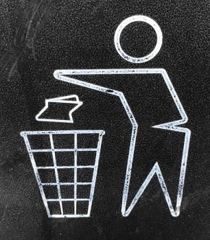

OUR SOLUTION
We present to you the app Treasure Trash. The app that makes what usually is a boring task fun Easily explained our app is an app that rewards its users for picking up trash off the streets. It will incentivize people to do some voluntary work for the betterment of our planet. Not only are they contributing in the fight to end littering, plastic pollution and global warming, but they will receive a little treasure in return for the trash. The rewards users can get rewarded are coupons, discounts and so forth.